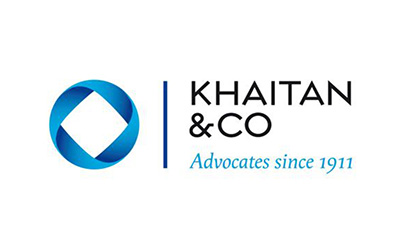

The University emphasizes on leading the students towards a fundamentally strong and professionally driven careers through the implementation of additional certification programmes as follows:


Duration:
4 Years (8 Semesters)
Affiliation:
PES University
Campus:
PES University Ring Road Campus
Ranked #1
#1 University in Karnataka (New Universities under 5 years) by KSURF
PESU is NAAC A+ Accredited
PES University is accredited with A+ grade in NAAC, a national level accreditation body which is an autonomous institution under University Grants Commission (UGC)
Ranked #1
#1 B School in Karnataka – Times of India B School Rankings 2021
India's Most Preferred
PES is the second most preferred destination next to IIMB for B-School aspirants – Times of India
Eligibility
50% aggregate score in 10+2 or equivalent in any stream from a recognized board. Register @ https://admissions.pes.edu
Get In Touch
Have questions about Bachelor of Commerce (Hons) with CMA admissions?
Share a few details and our admissions counsellors will walk you through eligibility, fees, scholarships and the application timeline — no obligation.
- Fast Response — a counsellor calls back within 24 hours.
- One-on-One Guidance — personalised help with eligibility and documentation.
- No Obligation — ask questions before you decide to apply.
Enquire Now
Fill this in and we'll reach out shortly.
Overview
Bachelor of Commerce (Hons) with CMA
B.Com (Hons) with CMA program at PES University, Bangalore – a dynamic blend of academic excellence and professional expertise. This innovative undergraduate course is designed to equip students with a comprehensive understanding of commerce while offering a specialized focus on Certified Management Accountancy (CMA). Students will get the B.Com (strategic finance) after the success full completing of the four years program.
B.Com integrated with CMA program seamlessly merges the foundational aspects of a Bachelor of Commerce (B.Com) with the strategic insights of Certified Management Accountant (CMA) certification, provided by the Institute of Management Accountants (IMA), USA. The course is globally recognized in 150 countries, with over 100,000 certifications earned worldwide. It’s an advanced- level credential appropriate for accountants and financial professionals in business. The B.Com (Hons)(Strategic Finance) program will consist of 160 credits spread over four years and eight semesters. Students will be interning in the corporate sector for two semesters, in the third and fourth years, respectively.
Our dedicated faculty, industry-aligned curriculum, and state-of-the-art facilities create an enriching learning environment for aspiring professionals. Graduates of this program will emerge with a strong foundation in commerce, coupled with the prestigious CMA qualification, positioning them as sought-after professionals in the world of finance and accounting. Prepare for a successful career in commerce with the B.Com (Hons) with CMA program at PES University – where academic excellence meets professional acumen


Why PES University
Program Differentiators
(PESU X Factors)
Research Papers
Encourages students to author impactful research papers, blending academic rigour with industry relevance.
Case Studies
Real-world business problem analysis with practical solutions, Peer to Peer learning.
Exposure
CFO Lounge, Commerce Conversation Series, Hackathons, Studyathons, Readathon, Workshops, Curricular and Co-Curricular Forums and Committees, Industry Visits.
Certification
Certifications in Python, Tableau,JMP, Excel and PowerBI, Advanced Excel, Risk Management, Commodity Markets, Export & Import Documentation, Financial Modelling.
Mentoring
2 one-on-one mentoring per semester.
Worksheets
Application based problem-solving in class.
About the Programme
WHY B.Com CMA?
Global Recognition
The CMA is recognized in over 150 countries, opening international career opportunities.
Strategic Skills
Combines financial planning, analysis, and performance management with strategic thinking.
Industry-Relevant
The curriculum aligns with industry demands, preparing students for roles in finance, corporate governance, and risk management.
Competitive Edge
The CMA credential, alongside the B.Com (Hons) degree, positions graduates as sought-after professionals in the finance and accounting sectors.
About the Programme
Program Highlights
- Comprehensive CMA Qualification
- 100% CMA Subject Integration with the program
- Paves way for Global CA recognition
- Complete hand holding for all subjects
About the Programme
Programme Differentiators
Meritorious Scholarships
PESU X Factors
Additional Support for CMA Exam preparation
Value Additions and Exposure
Pre examination Test Series for better results
Library Support with Online Study Text Access
Global Recognition, Indigenous Excellence
Curriculum
Curriculum Structure
CMA Part 1: Financial Planning, Performance, and Analytics
This part focuses on foundational elements of financial management, providing students with essential skills in the following areas:
External Financial Reporting Decisions
Emphasizes financial reporting standards, preparing financial statements, and analysing external reports.
Cost Management
Focuses on budgeting, cost control, and effective management of operational costs.
Internal Controls
Covers risk management, internal auditing practices, and ensuring regulatory compliance.
Planning, Budgeting, and Forecasting
Teaches strategic financial planning, revenue forecasting, and cash flow management.
Technology and Analytics
Involves the use of financial data analytics and modern technological tools for decision-making.
Performance Management
Helps in evaluating organizational performance through KPIs (Key Performance Indicators) and strategic tools.
CMA Part 2: Strategic Financial Management
This part advances the financial expertise of students, focusing on strategic decision-making and financial management.
Financial Statement Analysis
Develops skills to analyze and interpret financial statements for decision-making.
Corporate Finance
Focuses on managing a company’s financial resources, including capital structuring and financing decisions.
Risk Management
Teaches techniques to identify, assess, and mitigate financial risks in business operations.
Investment Decisions
Guides in making informed investment choices and managing portfolios.
Decision Analysis
Involves strategic decision-making based on financial analysis and forecasting models.
Professional Ethics
Emphasizes ethical practices and standards in financial management and decision-making.
How We Teach
Pedagogy
- Interactive Lectures: Engage students through interactive lectures that blend theoretical concepts with real-world examples. Encourage active participation, questions, and discussions to enhance understanding.
- Case Studies: Integrate case studies derived from actual business scenarios to apply theoretical knowledge to practical situations. This hands-on approach fosters critical thinking and problem-solving skills.
- Guest Lectures and Industry Insights: Invite industry experts and professionals to deliver guest lectures, providing students with valuable insights into current industry practices, trends, and challenges.
- Workshops and Seminars: Conduct workshops and seminars focused on CMA exam preparation, practical accounting software usage, and soft skills development. These sessions bridge the gap between academia and industry expectations.
- Professional Certification Support: Offer dedicated support for CMA exam preparation, including study groups, practice exams, and mentoring. This ensures that students are well-prepared for certification, enhancing their employability.
- Internships and Practical Experience: Facilitate internships and practical experiences with industry partners, allowing students to apply classroom learning to real-world situations, thus enhancing their practical skills and professional acumen.
- Technology Integration: Leverage modern teaching technologies, simulations, and accounting software to familiarize students with the tools and technologies used in the industry, preparing them for a tech-savvy work environment.
- Research Projects: Encourage students to undertake research projects related to emerging trends in commerce and management accounting. This promotes independent thinking and a deeper understanding of evolving industry dynamics.
- Continuous Assessment: Implement a system of continuous assessment through quizzes, assignments, and presentations, providing regular feedback to students and promoting a consistent and thorough understanding of the subjects.
About the Programme
Skill Based Certification Courses
- Advanced Excel
- Risk Management
- Commodity Markets
- Export & Import Documentation
- Financial Modelling
Careers
Career Prospects
Commerce graduates from PES University are trained to become Techno-Commerce Professionals who can perform any profiles in Finance, Accounts, Banking, Consultancy and Risk and Wealth managemen
The graduating students would be equipped with knowledge, tools, methods, theories, and practices of the Commerce profession and trained to apply them in day-to-day life, industry and other walks of life to optimize the outcomes. The Commerce graduates may opt for the following career opportunities in various fields.
Careers
Future Career Prospects after completing the Certified Management Accountant (CMA)
| Financial Analysts |
| Management Accountants |
| Corporate Finance Professionals |
| Tax Consultants |
| Business Consultants |
| Entrepreneurial Ventures |
| Financial Planners |
| Auditors |
Placements
Placement Opportunities & Career Assistance
Placements have always been the USP of PES University. Professional placement assistance will be provided through the centralised placement cell of the university, along with organised training in soft skills, aptitude, etiquette, resume building, etc., from the first semester itself to instill the necessary qualities for students to succeed in campus placements.
In addition, the following will be extended to all our B.Com (Hons) with CMA students:
Resume building and Interview workshops
Career assistance includes workshops on resume building, interview skills, and effective communication, preparing students for the competitive job market.
Mock Interviews
The university conducts mock interview sessions to help students gain confidence and polish their interview techniques. Feedback from industry experts is provided to help students refine their skills.
Leverage of our Alumni Network
Graduates benefit from a strong and active alumni network that provides mentorship, networking opportunities, and insights into various career paths. Alumni often play a pivotal role in connecting current students with employment opportunities.
CMA Exam Support
Recognising the significance of the CMA qualification, the university offers dedicated support for CMA exam preparation, including study materials, practice exams, and guidance from experienced faculty.
Internship Opportunities
The university facilitates internships with leading organisations, allowing students to gain practical experience, apply classroom knowledge, and establish connections within the industry.
Career Counselling
The university offers personalised career counselling services to help students identify their strengths, interests, and career goals. This guidance assists students in making informed decisions about their professional journeys.


Curriculum
Curriculum Structure
- Costing Foundations & Methods – CMA Part 1 D [1–5]
- Financial Statement Reporting I – CMA Part 1 A [1–4]
- Strategic Planning & Performance Foundations – CMA Part 1 B [1–4]
- Governance & Control Foundations – CMA Part 1 E [1–3]
- Data Analysis and Interpretation
- Indian Constitution
- Cost & Variance Analysis – CMA Part 1 C [1–7]
- Financial Statement Reporting – II – CMA Part 1 A [5–13]
- Budgeting & Forecasting Techniques – CMA Part 1 B [5–9]
- Costing Systems & Cost Control Techniques – CMA Part 1 D [6–15]
- Environmental Studies and Life Sciences
- Direct Tax
- Control Systems & Compliance – CMA Part 1 E [4–7]
- Financial Statement Reporting – III – CMA Part 1 A [14–30]
- Advanced Budgeting & Performance Evaluation – CMA Part 1 B [10–15]
- Information Systems & Digital Finance Infrastructure – CMA Part 1 F [1–13]
- Advanced Excel
- EIE – I
- Social Internship
- Data Analytics & Business Intelligence – CMA Part 1 F [14–18]
- Systems Control & Risk Management – CMA Part 1 E [8–10]
- Performance Measurement & Decision Analysis – CMA Part 1 C [8–12]
- Cost Management & Operational Efficiency – CMA Part 1 D [16–22]
- EIE – II
- GST Compliance and Customs
- Financial Statement Analysis – I – CMA Part 2 A [1–4]
- Corporate Finance – I – CMA Part 2 B [1–4]
- CVP & Decision Analysis – CMA Part 2 C [1–4]
- Risk Management – CMA Part 2 D
- Professional Ethics – CMA Part 2 F
- Capital Budgeting Fundamentals – CMA Part 2 E [1–7]
- Internship & Project
- Financial Statement Analysis – II – CMA Part 2 A [4–7]
- Corporate Finance – I – CMA Part 2 B [5–8]
- Marginal & Pricing Decisions – CMA Part 2 C [5–8]
- Professional Ethics – CMA Part 2 F
- Capital Budgeting Fundamentals – CMA Part 2 E [8–16]
- Internship & Project
*Subject to change.
Financial Support
Merit scholarships, awarded on performance
Over ₹140 crores in merit scholarships have been given to PES University students since 2014.
Merit Scholarships
Awarded on CGPA / SGPAScholarship
50%
Prof. MRD Scholarships
Merit Certificate + 50% Tuition Fee Refund for Top 5% of the Students based on their CGPA.
Scholarship
40%
Prof. CNR Rao Scholarships
Merit Certificate + 40% Tuition Fee Refund for the next 20% of the Students based on their SGPA.
Scholarship
7.75+
Distinction Awards
Merit Certificate for Students securing 7.75+ SGPA.
PES Loyalty Program
Awarded on family / institutional ties, every year of studyLoyalty
30%
PES Employees
Children of full-time staff, 5+ years employment.
Loyalty
20%
PES Institution Students
Graduates of any PES institution or sister concern.
Loyalty
10%
Siblings of Students
Siblings of currently enrolled PES students.
Loyalty
10%
Alumni Family
Siblings and children of PES University alumni.
University Highlights
Recognition beyond the programme
The accreditations and rankings behind PES University as a whole.
Ranking
#1
University in Karnataka
Among new universities under 5 years, ranked by KSURF.
Accreditation
A+
NAAC Accredited
PES University holds NAAC's top-grade accreditation nationally.
Ranking
#1
B-School in Karnataka
Times of India B-School Rankings, 2021.
Recognition
2nd
Most Preferred B-School
Second only to IIM Bangalore among B-School aspirants, per Times of India.